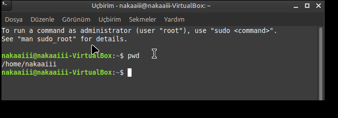
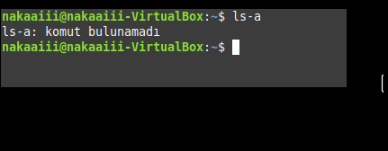
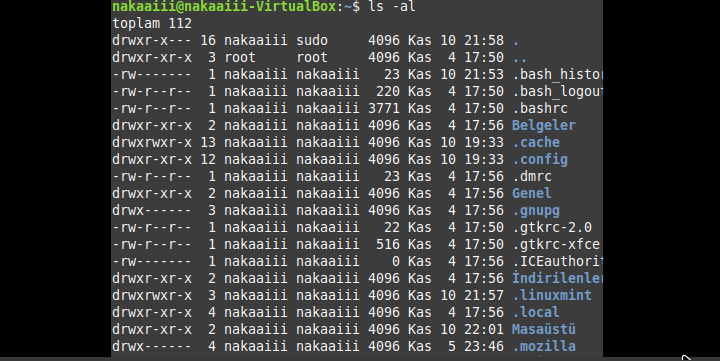
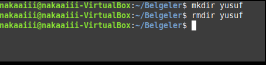
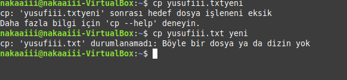
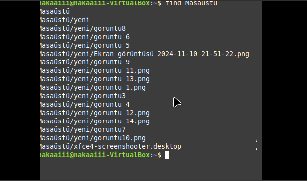

merhaba sevgili arkadaşlar ben bilişim sınıfı öğrencilerinden Yusuf Semih Halis.Sizler kendi edindiğim bazı bilgileri paylaşmak istiyorum linux komutlarından bahsedelim linux işletim sisteminde bazı terminal komutları vardır. Özellikle windows harici işletim sistemlerini kullanıyorsanız illaki x işletim sistemi komutları sizin işinize yarayacaktır. şimdi sizlerle dersimize geçelim...

burada cd komutu windows komutlarından düşünerek anlıyacağımız gibi bir klasöre giriş yapmamızda yardımcı olan komuttur... Clear ın anlamıysa dosya silmek için kullanılan dizi silmede kullanılan komuttur...

Burada arkadaşlar kendi ismimi yazamadım fakat nakaaiii olarak isim koymuştum . Buradan anlayacağınız gibi tüm yazdığım kodlamalar benim üzerime dir...
pwd nin anlamı dosya veya klasör hanfi dizilimden geldiği hangi klasörün alt klasörü olduğunu gösterir.
ls bizlere dizinin hangi klasörlerden oluşturduğunu barındırdığını gösterir arkadaşlar...
ls-a komutu,dizi içindeki gizli klasörleri göstermektedir fakat bende gizli klasörler yoktu. Bilgisayar bu yüzden klasör bulunamıyor diyor
Burada klasörlerin sahiplerini dizinlerini ve gizlive normal dosyalarını renk ile ayırt edderek bize göstermesini saağlayan komuttur arkadaşlar...
buda cd ile ilgili bir ufak örnek anlattım...
MKDİR= klasör açılımını oluşturulmasını sağlarken,
rmdir dosya silinmesinde olanak sağlamaktadır...
touch komutu dosya klasor dizinin içinde boş sayfa belge klasör açar...
cp komutu adı üzerinde copy gibi kopya oluşturur. daha güzel anlamda söylersek dışarıda ki bir klasörü bir başka klasörün içine kopyalayan komuttur...

rm-r komutu dizin içindeki ve diziyi tamamen siler...

history komutu bizlere daha önce çalışmış olduğumuz terminalden hangi komutları jullandğımızı bizlere göstermektedir...

yukarıda history |grepls yazmışım burada grep ve|işareti dikkate almalıyız bunları yazarak dilde bu komutları kaç kez yazdığımızı kullanma sıklığımızı görebiliriz akadaşlar...

Mam komutu yapıp enter tuşuna bastığımızda komutlarla ilgili hangi komutun ne anlama geldiğini gösteren yazılarla karşılaşırız...
find komutu dosya arama aracıdır arkadaşlar bu komut sayesinde istediğimiz klasörü bulabiliriz...

head komutu seçtiğimiz komutun içindeki sözcük ve satırlarının ilk 10 satırını gösteren komuttur...

tail komutu head ın tam tersi görevde bulunur yani boş klasör belgenin son 10 satırını göstermektedir...

grep komutu istediğimiz varlığın ve komutun nerede olduğunu gösterir .Yukarıda gördüğünüz gibi grep-n yazmışım ve yanına x bişey yazdığımı düşünün.ben y harfini yazdım. bu yazdığınız şeyin nerede olduğunu nerede yazıldığını görebilrsiniz .kaç defa yazıldığınıda ayrıca görebilirsiniz...

cat komutu metin dosyalarını okumak, görüntülemek ve birleştirmek için kullanılır.

echo komutu klasöre yazı yazdırmak için kullanılır. temel olarak dizgi ifadelerini yazdırmak için kullanılır...
Arkadaşlar örnek vermek istiyorum pythonda değişkene bir değer atayıp printte hani değişkeni yazdırdığımızda atanan değeri yazdırdığı gibi echo ile klasöre yazı yazdırıp cat komutu ile görüntüleme yapabiliriz...
Evet sevgili arkadaşlar benim anlatmak istediklerim bu kadardı umarım anlatabilmişimdir sizlere çok teşekkür ederim. Diğer derslerimizde görüşmek üzere dileğiyle hoşçakalı